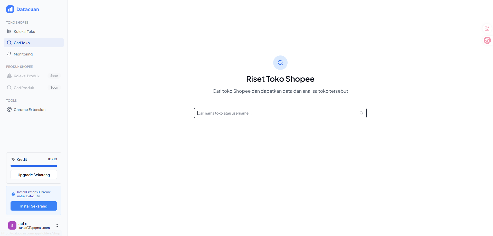

业务背景
自动化工具和业务页面不仅要能跑，还要让使用者快速理解当前状态、下一步动作和异常位置。
Frontend UI / Interface Implementation
`qdUI.png` 对应的是前端 UI 方向，重点是把业务内容组织成清晰的页面结构：信息层级、组件布局、操作入口、状态反馈和响应式呈现都要能服务真实使用。

业务背景
自动化工具和业务页面不仅要能跑，还要让使用者快速理解当前状态、下一步动作和异常位置。
界面拆解
按导航、内容区、数据区、操作区和状态反馈拆分页面，避免所有信息堆在同一个区域。
执行方式
用 HTML、CSS 和 JavaScript 实现布局、组件、交互状态和响应式适配，并按业务优先级组织视觉层级。
产出价值
让工具从“功能可用”进一步变成“界面清楚、操作顺手、维护方便”的可交付页面。
UI Detail 界面细节
根据业务重要性安排标题、数据、操作按钮和辅助说明，降低阅读成本。
把页面拆成导航、卡片、表单、状态标签、操作按钮等可复用结构。
关注 hover、focus、按钮状态、空状态和错误提示，让界面更像真实工具。
让页面在桌面和移动端都能保持清晰布局，避免文字和按钮互相挤压。